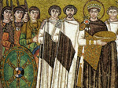

| |
Архив обновлений
- 28.01.2014 г.—
- добавлена аннотация на книгу Евтропия
«Бревиарий от основания Города.».
- 26.01.2014 г.—
- добавлена новая цитата в раздел «коротко о разном»
- 25.01.2014 г.—
- появилась новая страница с информацией по
Улугбеку, правителю Самарканда, выдающемуся ученому и астроному XV в.
- 01.11.2013 г.—
- добавлена новая цитата в раздел «коротко о разном»
- 21.10.2013 г.—
- появилась новая страница с информацией по
Томасу Торквемаде, «великому инквизитору» ??спании конца XV в.
- 25.09.2013 г.—
- появилась новая страница с информацией по
царице Тамаре, правительнице Грузии конца XII — начала XIII вв.
- 08.05.2013 г.—
- добавлена новая цитата в раздел «коротко о разном»
- 25.10.2012 г.—
- добавлена новая цитата в раздел «коротко о разном»
- 12.10.2012 г.—
- добавлена аннотация на книгу Я. Буриан и Б. Моуховой
«Загадочные этруски».
- 09.10.2012 г.—
- добавлена новая цитата в раздел «коротко о разном»
- 30.09.2012 г.—
- добавлена новая цитата в раздел «коротко о разном»
- 25.09.2012 г.—
- появилась новая страница с информацией по
Льву Математику, выдающемуся византийскому ученому IX в.
- 17.09.2012 г. —
- обновлена информация по Хамуасу, египетскому жрецу и архитектору XIII в. до н. э.
- 14.09.2012 г. —
- обновлена информация по Василисе Кожиной, участнице Отечественной войны 1812 г.
- 10.09.2012 г.—
- добавлена новая цитата в раздел «коротко о разном»
- 31.07.2012 г.—
- добавлена аннотация на книгу Ю. Б. Циркина «Карфаген и его культура.».
- 21.06.2012 г.—
- добавлена новая цитата в раздел «коротко о разном»
- 15.06.2012 г.—
- добавлена аннотация на книгу ??. М. Дьяконова «Люди города Ура».
- 11.06.2012 г.—
- появилась новая страница с информацией по
У Чэну, известному китайскому ученому XIII-XIV вв.
- 29.05.2012 г.—
- добавлена новая цитата в раздел «коротко о разном»
- 24.05.2012 г.—
- появилась новая страница с информацией по Юй Цяню, китайскому полководцу XV в.
- 13.05.2012 г.—
- добавлена новая цитата в раздел «коротко о разном»
- 20.04.2012 г. —
- обновлена информация о Спартаке, римском гладиаторе, поднявшем восстание в I в. до н. э.
- 16.04.2012 г.—
- появилась новая страница с информацией по
Ромулу Августулу, последнему императору Западной Римской империи.
- 12.04.2012 г. —
- добавлен список литературы по цивилизации инков.
- 05.04.2012 г.—
- добавлена новая цитата в раздел «коротко о разном»
- 28.03.2012 г.—
- добавлена новая цитата в раздел «коротко о разном»
- 15.03.2012 г.—
- появилась новая страница с информацией по
Ефиму Никонову, конструктору первой российской подводной лодки.
- 28.02.2012 г.—
- добавлена новая цитата в раздел «коротко о разном»
- 14.02.2012 г.—
- добавлена новая цитата в раздел «коротко о разном»
- 29.01.2012 г.—
- появилась новая страница с информацией по
Эратосфену Киренскому, выдающемуся древне–греческому ученому.
- 20.01.2012 г.—
- добавлена новая цитата в раздел «коротко о разном»
- 25.12.2011 г. —
- обновлена информация поРамзесу II, египетскому фараону XIX династии и Эхнатонуегипетскому фараону XVIII династии, реформатору.
- 21.12.2011 г. —
- обновлена информация по Куаутемоку, предводителю ацтеков в XVI в.
- 16.12.2011 г. —
- обновлена информация по Василисе Кожиной, участнице Отечественной войны 1812 г.
- 03.12.2011 г. —
- добавлен список литературы по Ассирии.
- 27.11.2011 г.—
- появилась новая страница с информацией по
Хатшепсут, правительнице Древнего Египта XV в. до н. э.
- 26.11.2011 г.—
- добавлена новая цитата в раздел «коротко о разном»
- 17.10.2011 г.—
- добавлена новая цитата в раздел «коротко о разном»
- 09.10.2011 г.—
- добавлена новая цитата в раздел «коротко о разном»
- 01.10.2011 г.—
- обновлена информация по Эсхину, выдающемуся греческому оратору IV в. до н. э.
- 20.09.2011 г. —
- добавлена краткая справка по Аэцию Флавию, выдающемуся римскому полководцу V в.
- 07.09.2011 г.—
- добавлена аннотация на книгу Б. Д. Грекова «Киевская Русь».
- 30.08.2011 г. —
- добавлена новая цитата в раздел «коротко о разном»
- 10.08.2011 г. —
- добавлена новая цитата в раздел «коротко о разном»
- 27.07.2011 г. —
- добавлена краткая справка по Феодоре, византийской императрице VI в., супруге императора Юстиниана I.
- 21.07.2011 г. —
- добавлена новая цитата в раздел «коротко о разном»
- 29.06.2011 г. —
- добавлена краткая справка по Анне Ярославне, дочери великого князя Ярослава Мудрого.
- 30.05.2011 г. —
- добавлена новая цитата в раздел «коротко о разном»
- 25.05.2011 г. —
- добавлен список литературы по Древнему Шумеру.
- 10.05.2011 г. —
- добавлена новая цитата в раздел «коротко о разном»
- 30.04.2011 г. —
- добавлена новая цитата в раздел «коротко о разном»
- 29.04.2011 г.—
- добавлена аннотация на книгу Н. Секунды «Армия Спарты».
- 10.04.2011 г. —
- обновлена информация по Хамуасу, египетскому жрецу и архитектору XIII в. до н. э.
- 07.04.2011 г.—
- обновлена информация по Ганнону, выдающемуся карфагенскому мореплавателю V в. до н. э.
- 05.04.2011 г. —
- добавлена краткая справка по Джону Боллу, английскому проповеднику, одиному из вождей крестьянского восстания 1381 г.
- 20.03.2011 г. —
- добавлена краткая справка по Людвигу Больцману, выдающемуся австрийскому физику.
- 15.03.2011 г. —
- добавлена краткая справка по Энгельбрект Энгельбректсону, народному герою Швеции XV века.
- 14.03.2011 г. —
- обновлена информация по Марии Французской, выдающейся поэтессе второй половины XII – начала XIII вв.
- 08.03.2011 г. —
- добавлена новая цитата в раздел «коротко о разном»
- 20.02.2011 г. —
- добавлена краткая справка по Карин Бойе, шведской поэтессе и прозаику первой половины XX века.
- 15.02.2011 г. —
- добавлена новая цитата в раздел «коротко о разном»
- 10.02.2011 г. —
- добавлена краткая справка по К. Ф. Гауссу, выдающемуся немецкому математиу XIX в.
- 29.01.2011 г. —
- добавлена краткая справка по Сверриру, лидеру восстания биркебейнеров, норвежскому королю XII в.
- 23.01.2011 г. —
- добавлена новая цитата в раздел «коротко о разном»
- 11.01.2011 г. —
- добавлена краткая справка по Кларе Шуман, выдающейся пианистке и композитору XIX в.
- 28.12.2010 г. —
- обновлена информация по Татьяне Соломахе, революционерке, участнице гражданской войны.
- 25.12.2010 г. —
- добавлена краткая справка по Ф. А. Цандеру, советскому ученому, изобретателю космических аппаратов.
- 12.12.2010 г. —
- добавлена краткая справка по Урукагине, шумерскому правителю Лагаша XXIV в. до н. э.
- 07.12.2010 г. —
- обновлена информация по Амаласунте, королеве остготов VI в.
- 02.12.2010 г. —
- обновлена информация по Элеоноре Аквитанской, английской и французской королеве XII в.
- 26.11.2010 г. —
- обновлена информация по Атанасиусу Кирхеру, ученому XVII века
- 21.11.2010 г. —
- добавлена краткая справка по Всеславу Полоцкому, князю Полоцкой земли XI – начала XII вв.
- 03.11.2010 г. —
- добавлена новая цитата в раздел «коротко о разном»
- 25.10.2010 г. —
- добавлена краткая справка по Рейнмару фон Хагенау, выдающемуся средневековому миннезингеру.
- 22.10.2010 г. —
- добавлена новая цитата в раздел «коротко о разном»
- 19.10.2010 г.—
- добавлена аннотация на книгу Лебедева Г. С. «Эпоха викингов в Северной Европе и на Руси».
- 19.09.2010 г. —
- добавлена краткая справка по Пердикке, ближайшему сподвижнику и полководцу Александра Македонского
- 12.09.2010 г. —
- добавлен список литературы по Эпохе викингов.
- 06.09.2010 г. —
- добавлена новая цитата в раздел «коротко о разном»
- 08.08.2010 г. —
- добавлена краткая справка по Мэри Рид, женщине-пирату первой половины XVIII в.
- 01.08.2010 г. —
- добавлена краткая справка по монахине Алёне, активной участнице крестьянской войны в России XVII в.
- 30.03.2010 г. —
- добавлена еще одна цитата в раздел «коротко о разном»
- 27.03.2010 г. —
- добавлена новая цитата в раздел «коротко о разном»
- 14.03.2010 г.—
- добавлена аннотация на книгу Арриана «Поход Александра».
- 28.02.2010 г. —
- добавлена краткая справка по Энн Бонни, женщине-пирату первой половины XVIII в.
- 15.02.2010 г. —
- добавлена краткая справка по Чайкиной Е. ??., комсомолке, героине Великой Отечественной войны.
- 11.02.2010 г. —
- добавлена новая цитата в раздел «коротко о разном»
- 02.02.2010 г. —
- добавлена новая цитата в раздел «коротко о разном»
- 23.01.2010 г. —
- добавлена краткая справка
по Велизарию, византийскому полководцу VI в.
- 16.01.2010 г. —
- добавлена краткая справка по Зенону Элейскому, древнегреческому философу
V в. до н. э.
- 05.01.2010 г. —
- добавлена новая цитата в раздел «коротко о разном»
- 28.12.2009 г. —
- добавлен список литературы по Цивилизации ацтеков.
- 24.12.2009 г. —
- добавлена новая цитата в раздел «коротко о разном»
- 19.12.2009 г. —
- добавлена краткая справка по Артемизии, правительнице Галикарнаса, союзнице Ксеркса.
- 17.12.2009 г. —
- добавлена новая цитата в раздел «коротко о разном»
- 13.12.2009 г.—
- добавлена аннотация на книгу «Удивительные эгейские царства».
- 10.12.2009 г. —
- добавлена краткая справка по Мерьет-нейт, царице первой египетской династии.
- 08.12.2009 г. —
- добавлена новая цитата в раздел «коротко о разном»
- 06.12.2009 г. —
- добавлена краткая справка по Кэдмону, средневековому монаху из Уитби, автору религиозных гимнов.
- 03.12.2009 г. —
- добавлена новая цитата в раздел «коротко о разном»
- 01.12.2009 г. —
- добавлена краткая справка по Гросвите Гандерсгеймской, древнейшей немецкой писательнице.
- 30.11.2009 г. —
- добавлена краткая справка по Марии Французской, выдающейся поэтессе XIII века.
- 28.11.2009 г. —
- добавлен список литературы по истории Киевской Руси.
- 23.11.2009 г.—
- добавлена краткая справка по Акадзомэ Эмон талантливой японской поэтессе X-XI вв.
- 21.11.2009 г.—
- добавлена краткая справка по Беде Достопочтенному, выдающемуся средневековому писателю
- 16.11.2009 г.—
- добавлена краткая справка по Гамилькону, карфагенскому мореплавателю V в. до н. э.
- 14.11.2009 г. —
- добавлен фрагмент статьи О. А. Смирницкой «Поэтическое искусство англосаксов»
- 12.11.2009 г. —
- добавлен список литературы по цивилизации этрусков
- 30.10.2009 г.—
- добавлена новая цитата в раздел «коротко о разном»
- 25.10.2009 г.—
- добавлена краткая справка по Ганнону, выдающемуся карфагенскому мореплавателю V в. до н. э.
- 24.10.2009 г.—
- добавлена еще одна цитата в раздел «коротко о разном»
- 15.10.2009 г.—
- добавлена новая цитата в раздел «коротко о разном»
- 12.10.2009 г.—
- добавлена аннотация на книгу Курбатова Г. Л. « ??стория Византии (От античности к феодализму)».
- 10.10.2009 г. —
- добавлен список литературы по Карфагену
- 05.10.2009 г.—
- добавлена краткая справка по Земнухову ??. А., одному из организаторов и руководителей подпольной комсомольской организации «Молодая гвардия», герою Великой Отечественой войны 1941-1945 гг.
- 05.08.2009 г.—
- добавлена краткая справка по Ямамото ??сороку, выдающемуся японскому военачальнику, стратегу, адмиралу периода Второй мировой войны.
- 04.08.2009 г.—
- добавлена краткая справка по Н. А. Щорсу, герою Гражданской войны.
- 02.08.2009 г.—
- добавлена краткая справка по Уоту Тайлеру, лидеру антифеодального восстания в Англии в 1381 г.
- 09.02.2009 г.—
- добавлена краткая справка по Чаке, зулусскому полководцу рубежа XVIII–XIX вв.
- 26.01.2009 г.—
- добавлена краткая справка по Ли Сун Сину, корейскому адмиралу XVI в., участнику японо-корейской войны, создателю первого броненосца.
- 22.01.2009 г.—
- добавлен тескт Матье М. Э. Город Атона из книги Матье М. Э. «Во времена Нефертити»
- 19.01.2009 г.—
- добавлен тескт Матье М. Э. Любящие истину из книги Матье М. Э. «Во времена Нефертити»
- 17.01.2009 г.—
- добавлена краткая справка по Ольге, русской княгине X в., аннотация на книгу Дж. Пендлбери, «Археология Крита», а также аннотация и фрагмент тескта из книги Матье М. Э. «Во времена Нефертити»
- 12.01.2009 г.—
- добавлены краткие справки по Неарху, полководцу IV в. до н. э., сподвижнику Александра Македонского,Герраде Ландсбергской, эльзасской художнице XII в. и Циолковскому К. Э., русскому, советскому учёному, основоположнику освоения космоса, а также аннотации на книги «Сокровища Египта» под редакцией А. Бонджоанни и «Тексты Пирамид» под ред. Четвертухина А. С.
- 6.01.2009 г.—
- добавлена краткая справка по Софонисбе Ангишоле, итальянской художнице рубежа XVI–XVII вв., добавлена аннотация на книгу Пьера Монтэ, «Египет Рамсесов. Повседневная жизнь египтян во времена великих фараонов».
- 5.01.2009 г.—
- добавлена аннотация на книгу Мишеля Шово «Повседневная жизнь Египта во времена Клеопатры».
- 25.12.2008 г. —
- добавлена краткая справка по Артемизии Джентилески, итальянской художнице рубежа XVI–XVII вв.
- 5.12.2008 г. —
- добавлена статья Баженовой А. А. «Граф Рауль III де Крепи де Валуа»
- 4.12.2008 г. —
- добавлена краткая справка по Сапфо, греческой поэтессе VII в. до н. э., добавлено несколько фрагментов в раздел «коротко о разном»
- 23.11.2008 г. —
- добавлена краткая справка по Кларе Андузской, французской поэтессе XIII в.
- 22.11.2008 г. —
- добавлена краткая справка по Кэте Кольвитц, немецкой художнице XX в.
- 21.11.2008 г. —
- добавлена краткая справка по Хамуасу, египетскому жрецу и архитектору XIII в. до н. э.
- 19.11.2008 г. —
- добавлена краткая справка по Вальтеру Голяку, предводителю крестового похода крестьян XI в.
- 16.11.2008 г. —
- добавлена краткая справка по Евну-Антиоху, предводителю восстания на Сицилии во II в. до н. э.
- 14.11.2008 г. —
- добавлено несколько цитат в раздел «коротко о разном»
- 12.11.2008 г. —
- добавлены списки литературы по Древнему Криту и Древней Спарте
- 10.11.2008 г. —
- добавлена краткая справка по Боудикке, царице британского племени иценов.
- 8.11.2008 г. —
- добавлен фрагмент текста «Цивилизация фараонов» Древнего Египта из Эмери У. Б. «Архаический Египет»
- 5.11.2008 г. —
- добавлен фрагмент текста Доватура А. ??. Цены на рабов; добавлена краткая справка по Элеоноре Аквитанской, английской и французской королеве XII в.
- 1.11.2008 г. —
- добавлен фрагмент текста Шишовой А.??. Воззрения древних греков на порабощение эллинов
- 27.10.2008 г. —
- ??зменения в структуре. До переиндексации некоторые ссылки в поисковиках будут недоступны.
- 21.10.2008 г. —
- добавлена краткая историческая справка по генералу Гошу, французскому полководцу конца XVIII в.
- 22.01.2008 г. —
- добавлена краткая историческая справка по Кристине Пизанской, французской писательнице и поэтессе XIV–XV вв.
- 06.06.2007 г. —
- добавлена краткая историческая справка по Вальтеру фон дер Фогельвейде, немецкому миннезингеру, одному из самых ярких представителей немецкого миннезанга XII–XIII вв.
- 31.05.2007 г. —
- добавлена краткая историческая справка по Атанасиусу Кирхеру, ученому XVII века
- 30.05.2007 г. —
- добавлена краткая историческая справка по графине де Диа, одной из самых известных куртуазных поэтесс средневековья.
- 4.03.2007 г. —
- добавлена краткая историческая справка по Пугачеву Е. ??., предводителю крестьянского восстания в XVIII в.
- 27.02.2007 г. —
- добавлена краткая историческая справка по Почиталину ??. Я., личному секретарю Емельяна Пугачева.
- 19.02.2007 г. —
- добавлены краткие исторические справки по революционеркам: Люсе Лисиновой и Доре Любарской
- 18.02.2007 г. —
- добавлена краткая историческая справка по Соловьяновой Е. ??., советской партизанке и текст: Борухович В. Г. «Античная книга-свиток».
- 11.02.2007 г. —
- добавлена краткая историческая справка по Марите Мельникайте, литовской партизанке и текст: Борухович В. Г. «Папирус».
- 4.02.2007 г. —
- добавлена краткая историческая справка по Константину XI, последнему византийскому императору (XV в.) и текст: Борухович В. Г. «Восковые таблички».
- 28.01.2007 г. —
- добавлена краткая историческая справка по Анне Комниной и текст: Борухович В. Г. «Александрийская культура книги».
- 22.01.2007 г. —
- в раздел статьи и тексты добавлено: «Бернгард Риман» Васильева А. Е. и «Хронология истории Древнего Египта» Томсинова В. А.
- 14.01.2007 г. —
- добавлена краткая справка по Амаласунте, королеве остготов VI в. н. э.
|
|
| |
- 21.12.2006 г. —
- добавлена краткая справка по Юстиниану, византийскому императору V в.
- 19.12.2006 г. —
- добавлены краткие справки по Софии Шолль, немецкой антифашистке и Рамзесу II, египетскому фараону XIX династии.
- 16.12.2006 г. —
- добавлены краткие справки по Меншикову А. Д., русскому политическому деятелю XVIII в., сподвижнику Петра I., Софье Ковалевской, русской женщине-математику XIX в. и Лени Рифеншталь, немецкой женщине-режиссеру XX в.
- 13.12.2006 г. —
- добавлены краткая справка и статья, посвященные Зое Космодемьянской, комсомолке, участнице Великой Отечественной войны, а также информация по Ханне Райч, немецкому пилоту-испытателю.
- 12.12.2006 г. —
- добавлена краткая справка по Флавию Клавдию Юлиану Отступнику, римскому императору IV в. н. э.
|
 император Юстиниан со свитой. Византийская фреска. |